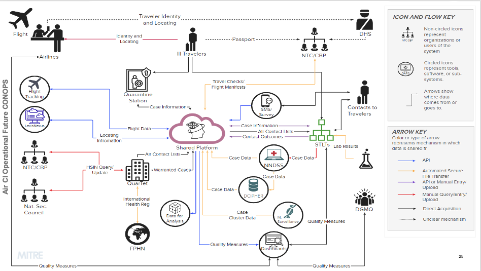

CDC DGMH Report of Ill Traveler
0.1.0 - ci-build
CDC DGMH Report of Ill Traveler
0.1.0 - ci-build
CDC DGMH Report of Ill Traveler - Local Development build (v0.1.0) built by the FHIR (HL7® FHIR® Standard) Build Tools. See the Directory of published versions
The objective was to gather information about the current system capabilities, processes, needs, and potential solutions to reduce burdens and bottlenecks in data exchange among DGMH, jurisdictional health departments, and key stakeholders and to ultimately develop a high-level Concept of Operations (CONOPS) for both the present and future state of air contact investigations. The primary focus was on the data exchange processes between port health stations (DGMH) and state and local health departments handling ill travelers. The meetings aimed to build consensus on the current state of air contact investigations and generate ideas for its future state. This included exploring potential disease scenarios to validate these assumptions.
Over 20 DGMH stakeholders and health department staff involved in air contact investigations were interviewed to develop this CONOPS. Based on the insights gained, the MITRE team assembled a working group composed of DGMH leadership.
The next phase of the project involves creating a roadmap. The goal is to categorize identified pain points into domains of change and provide actionable recommendations to DGMH for future improvements.


IG © 2023+ HL7 Public Health Working Group. Package hl7.fhir.us.illTraveler#0.1.0 based on FHIR 4.0.1. Generated 2024-01-17
Links: Table of Contents |
QA Report
| Version History |
 |
Propose a change
|
Propose a change